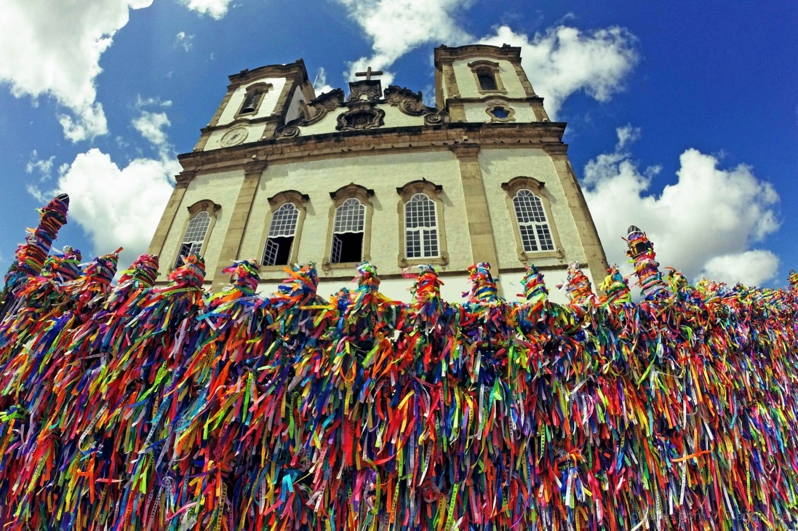
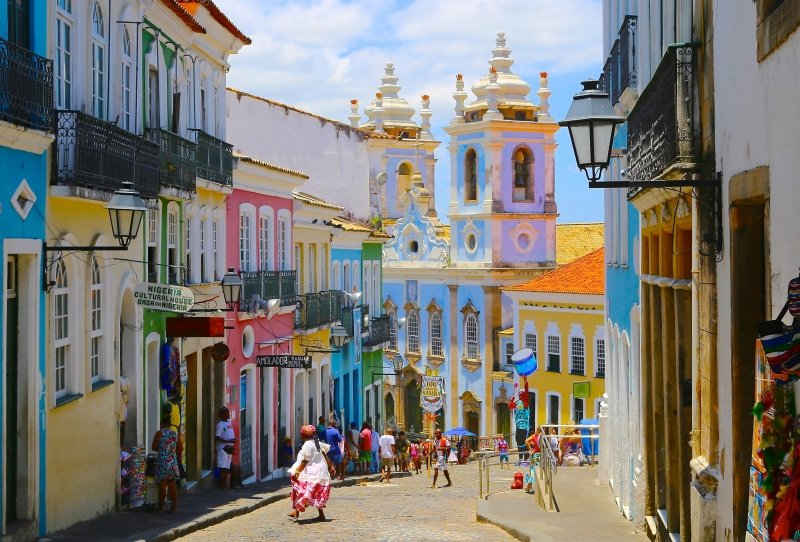
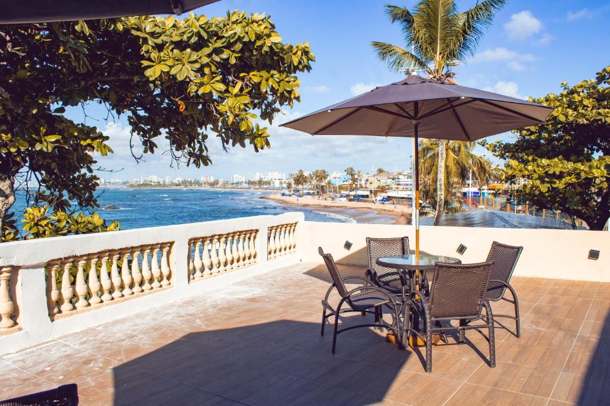
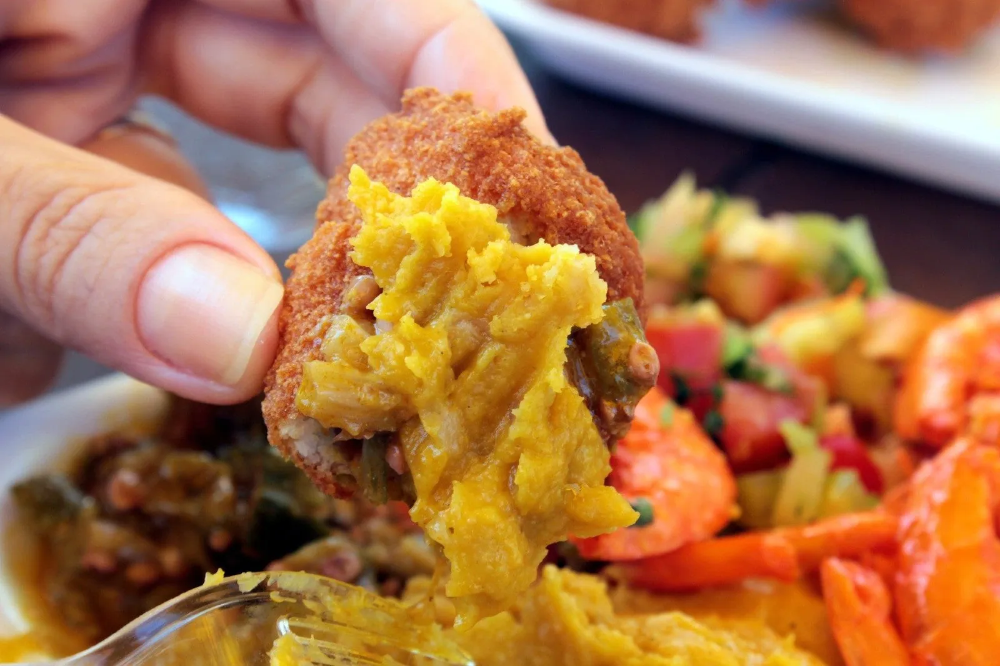
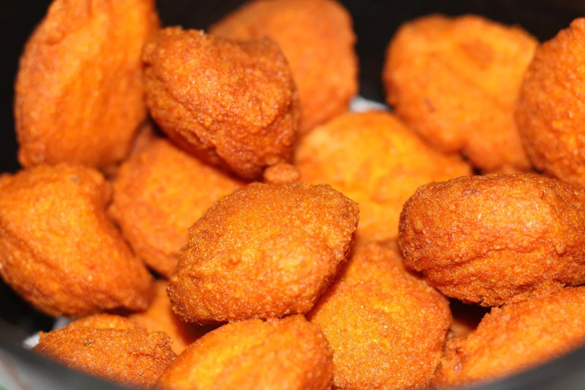
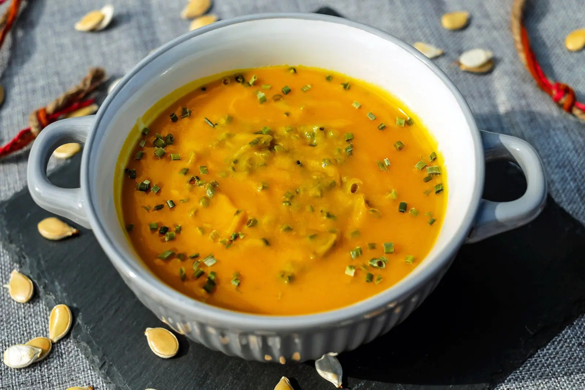

Pontos turísticos em Salvador BA
Basílica do Senhor do Bonfim
A Basílica Nosso Senhor do Bonfim é uma das mais belas e tradicionais igrejas de Salvador, tanto para os turistas quanto para os moradores da cidade. Apesar da grande fama e de atrair um enorme número de turistas, a Igreja de Nosso Senhor do Bonfim, inaugurada no final do século XVIII, não tem arquitetura luxuosa ou interior repleto de ouro. A Igreja tem a arquitetura em estilo neoclássico e a fachada em rococó, acompanhando o modelo das igrejas portuguesas dos séculos XVIII e XIX. O que se destaca na obra são os belos afrescos e azulejaria que compõe o interior da igreja, além da grande fé que leva centenas de devotos diariamente ao lugar.
Para mais informações sobre a Basílica, clique aqui.
Pelourinho
O Pelourinho um dos pontos turísticos de Salvador mais visitados da cidade, é também um dos mais subestimados pelos viajantes. Isso porque, muitas vezes o tempo dedicado para conhecê-lo é de apenas uma manhã ou tarde – ou, quando muito, um dia inteiro. Porém, saiba que a área histórica da capital baiana tem atrações para mais de um dia. Por lá, há literalmente dezenas de construções que guardam o passado desta área. Além de simplesmente caminhar observando os detalhes arquitetônicos da região, há muitas igrejas, museus, ateliês, lojinhas e centros culturais onde você poderá investir bons minutos conhecendo.
Para mais informações sobre o Pelourinho, clique aqui.
Itapuã
A paisagem é cercada por coqueiros, mar calmo e areia dourada. Além de, claro, as construções marcantes: a estátua da sereia de Itapuã, e o próprio farol de Itapuã (que pode ser visto ao longe, já que fica um pouco mais à frente). Seus arrecifes também permitem a formação de piscinas naturais, com as águas calmas de Itapuã! Não é à toa que a praia é um dos cartões-postais de Salvador. No entanto, não espere por uma praia tão limpa e de mar bonito quanto as demais dessa lista.
Para mais informações sobre a praia, clique aqui.
E existem muitos outros lugares interessantes na cidade...
- O Elevador Lacerda.
- Mercado Modelo.
- Praia da Barra.
- Praia do Flamengo.
- E mais!
Outras curiosidades...
- O Elevador Lacerda foi o primeiro elevador urbano do mundo.
- A primeira escola de ensino superior do Brasil foi fundada em Salvador.
- O seu primeiro nome foi São Salvador da Baía de Todos os Santos.
- É conhecida como a Capital da Alegria.
- A cidade possui 474 anos e seu aniversário é celebrado no dia 29 de março!
- A população estimada de Salvador, com dados do IBGE de 2021, é de 2.900.319 pessoas.
- Foi a primeira capital do Brasil.
- Salvador já apareceu no livro dos recordes por ter o maior Carnaval do mundo!
Pratos típicos da capital baiana!
- Acarajé: 
- Abará: 
- Vatapá: 
- Xinxim de galinha:
- Entre muitas outras delicias!